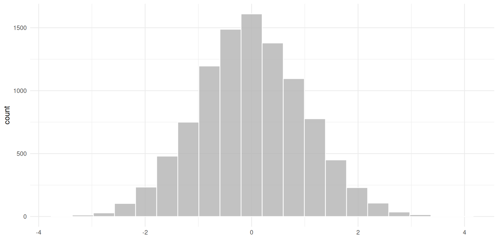
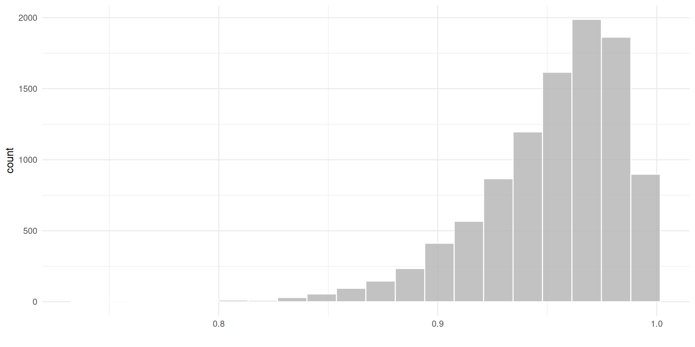
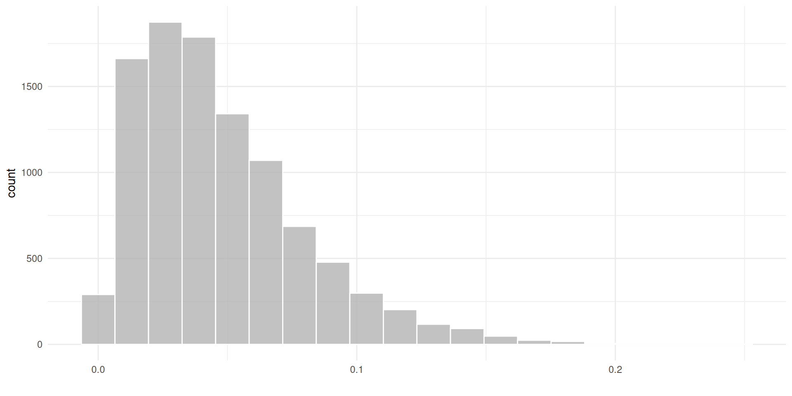
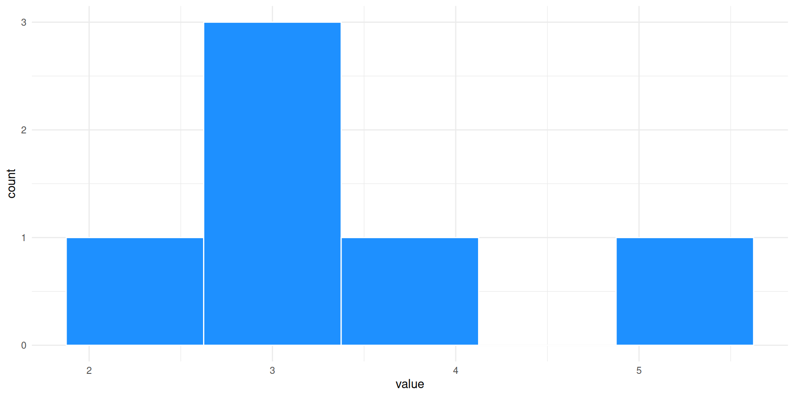
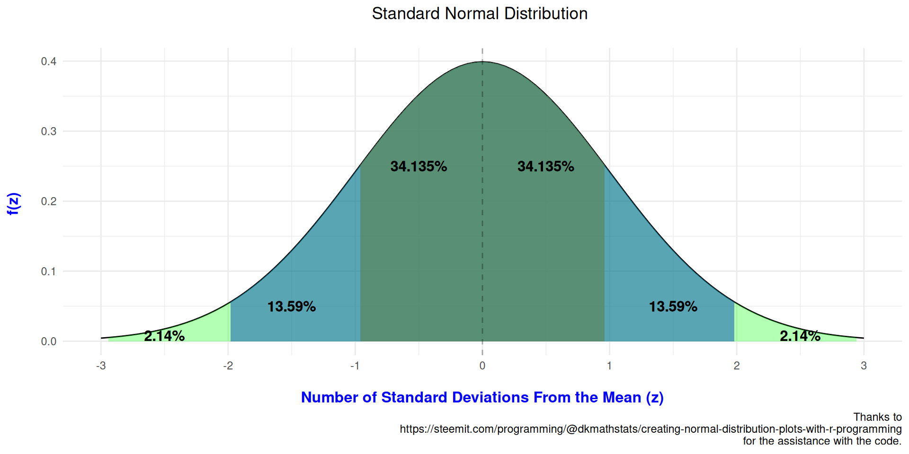
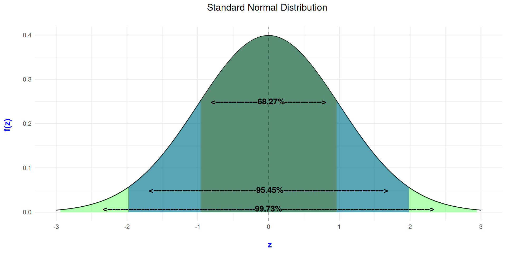
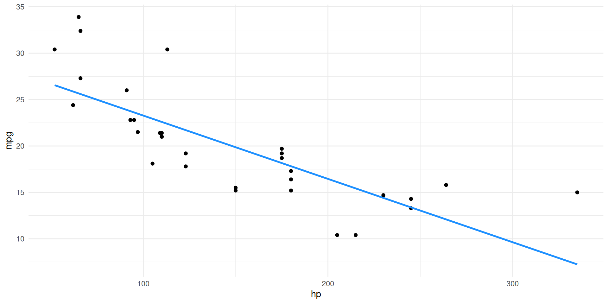
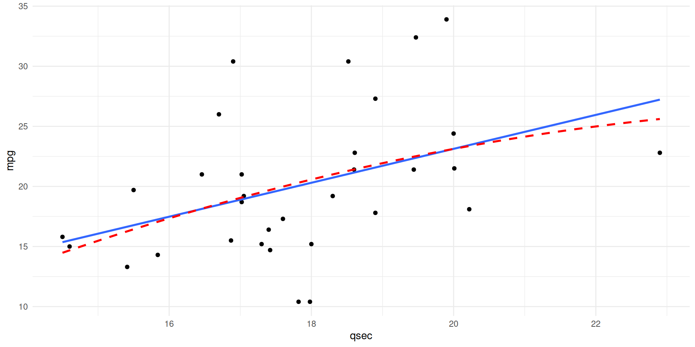

[1] 0.0185[1] 1.85
RName & pronouns
What do you want to do after you graduate?
What is your experience with statistics?
What is your experience with SPSS?
Something that you are passionate/nerdy about
Use SPSS to compute statistics
Read/Interpret Descriptive & Inferential Statistics
Understand & Solve Formulas for Statistical Tests
Understand Sampling, Statistical Null Hypothesis Testing, Effect Sizes, Confidence Intervals
Demonstrate ability to apply these skills to test hypotheses using real data
spongebob running
Cameras are optional
Unmute yourself and interrupt me
put in the chat that you are confused
private message me in the chat that you are confused
Design is how a study is organized
Experimental (manipulate your independent variable to see what effect it has on the dependent variable)
Correlational (don’t manipulate anything; just look at the relationship between two variables)
Population is a large group of individuals, which a law of nature applies
Sample is a group of a given population intended to represent that population
Participants are those measured in a sample. Participants always refers to individuals (e.g., students, children, prisoners)
A sample is supposed to generalize to a given population
We never use subjects in the social sciences anymore, they are participants
Statistics use English letters to get values for a sample
Parameter use greek letters for values of a population
Statistic = Sample
Parameter = Population
raw score is the score given to a participant
Frequency denoted as f; number of times a score occurs/is counted
Note. Not F, that is something completely different.
Best way of visualizing frequencies is by using a bar graph
Bar graph graph with vertical bar over each nominal/ordinal category
Side Note A pie graph will always be inferior to a bar graph/any other visual
Histogram is a frequency graph used for interval or ratio scores
Frequency Polygon similar to a histogram, which shows data points connected with straight lines
Grouped Distributions put continuous data into categories
paranormal distribution
Normal curve is often called the bell-shaped curve; is symmetrical
Normal Distribution same thing as normal curve; represents the population because if you have enough data you will get a normal distribution (central limit theorem); if your data looks like this in a histogram, you’re in good shape
Distribution Tail has two tails; these will be more important for statistics
Negative Skew is like a finger pointing left; not normal and is asymmetrical; indicates higher frequency of middle and higher scores; no low frequency in higher scores
Positive Skew is like a finger pointing right; not normal and is asymmetrical; indicates higher frequency of low and middle scores; no low frequency in lower scores
Some thresholds are that if you have a skewness value of +-2 or +-3 then you’re good to use that variable like it is.
Kurtosis is when your frequency are really skinny and tall or really flat and wide
Deciding what is positively and negatively skewed from visuals alone is not good enough
You’ll want to look into your descriptive statistics and look at skewness and kurtosis to make sure they are within +-3
Some statistics can handle some skewness and kurtosis
Other times you’ll have to transform the variable using fancy methods that we will not talk about in this class.
\[ Relative\;frequency = f/N\]
Here, f is the frequency of one category of a nominal variable. N is the total number of observations for all the categories of that variable.
Proportion of Area under the Curve is the proportion of total area under the normal curve
Percentile is the percentage of all scores in the sample below a particular score
Cumulative Frequency is the number of scores in the data at or below a particular score
\[\Sigma = Sum\;of\;scores\]
\[\Sigma\;X = Sum\;Of\;X\]
Both of these are stating that we are adding all of the data points together.
Sum of X is the sum of the scores in a sample
Concept that as statisticians every person is just a data point
We are interested in the central score
Measures of Central Tendency are statistics that summarize the location of a distribution on a variable by indicating where the center is
A Normal distribution will have the central point right down the center
A skewed distribution will have the central point where the frequency of scores is the highest
.pull-left[  ]
]
.pull-right[ * Value/score with the highest frequency
Essentially useless in statistics
Unimodal distributions distribution with only one hump; one value is the mode
Bimodal distributions distribution with two humps; two values with the highest frequency; two modes ]
.pull-left[  ]
]
.pull-right[ * Median is the middle value/score; the 50th percentile
Unlike the mode, it will always be close to the middle of a distribution
You’ll only ever have one median
The symbol is: \[Mdn = Median\] ]
Preferred for ordinal/ordered data
Not the best option for normally distributed interval & ratio scores
Is more reliable when dealing with skewed data
Important Note If you have an even number of scores/values, then you will add the two middle values and divide by 2
Mean is the score located at the mathematical center of a distribution
Xbar is often used for the mean
\[\overline{X} = \frac{\Sigma\;X}{N} \] is the formula to calculate the mean.
Calculate the mean for interval and ratio scales
Basis for most inferential statistics
Most statistics revolve around the mean
Can’t just trust descriptive statistics like the mean
The distance a participant’s score/value is from the mean/average
Deviations can be positive or negative
To get the deviation, you subtract the mean from each participant’s score
\[ X - \overline{X} \]
The larger the value the farther away from the mean the score/value is
Sum of the deviations around the mean is the sum of all differences between the scores and the mean
Deviations is the start for upcoming lectures and statistical tests, especially the sum of the deviations
\[ \Sigma(X - \overline{X}) \]
If the sum of the deviations is 0 then that means your math is good
Deviation of each score/value from the mean is often referred to as error/residual in statistical tests
Correlational designs use the mean of IV and the mean of DV to look for a relationship between the two variables
Experiments compare the two or more groups (IV) and the relationship with the mean value/score of the DV
Line Graphs are good for showing progress or change in time
To show group differences (nominal or ordinal IV), bar graphs are the norm
Scatterplots are best for continuous IV and continuous DV (interval or ratio)
\[ \mu = Population\;Mean \]
If you test a population then you would use mu instead of xbar
\[ \mu = \frac{\Sigma\;X}{N} \]
The book goes over this kind of fast, so I’m going to use additional materials to hopefully better explain these topics
raw score is the score given to a participant
Frequency denoted as f; number of times a score occurs/is counted
Frequency Distribution is a distribution of each score and the number of times the score has occurred/is counted
.pull-left[ - Normal curve is often called the bell-shaped curve; is symmetrical
.pull-right[  ]
]

.pull-left[ - Negative Skew is like a finger pointing left - not normal and is asymmetrical - indicates higher frequency of middle and higher scores - no low frequency in higher scores]
.pull-right[

]
.pull-left[ - Positive Skew is like a finger pointing right - not normal and is asymmetrical - indicates higher frequency of low and middle scores - no low frequency in lower scores]
.pull-right[

]
Kurtosis can be thought of as the pointyness of your distribution
a leptokurtic distribution is reflective of positive kurtosis
a platykurtic distribution is reflective of negative kurtosis
distribution examples
Deciding what is positively and negatively skewed from visuals alone is not good enough
You’ll want to look into your descriptive statistics and look at skewness and kurtosis to make sure they are within +-3
Some statistics can handle some skewness and kurtosis
Other times you’ll have to transform the variable using fancy methods that we will not talk about in this class.
\[Relative\;frequency = f/N\]
f is the frequency of one category of a categorical variable. N is the total number of observations for all the categories of that variable.
cumulative frequency is the number of scores in the data at or below a particular score
[1] 3 5 3 4 2 3\[Count\;of\;3 = f/N\]
\[Count\;of\;3 = 3/6\]
\[Relative\;Frequency = 3/6 = .50\]
\[Percentage = 3/6 = .50*100 = 50\%\]

\[\Sigma = Sum\;of\;scores\]
\[\Sigma X = Sum\;Of\;X\]
Measures of Central Tendency are statistics that summarize the location of a distribution on a variable by indicating where the center is
A Normal distribution will have the central point right down the center
A skewed distribution will have the central point where the frequency of scores is the highest
.pull-left[  ]
]
.pull-right[ - Value/score with the highest frequency
Not used in inferential statistics, mainly for descriptive statistics
useful for telling whether a distribution is bimodal/multimodal or normal ]
will be the middle of the distribution
median can be very useful for unusual data
the symbol in literature is sometimes
Important Note If you have an even number of scores/values, then you will add the two middle values and divide by 2
\[Mdn = Median\]
[1] 1 3 5 4 2 1 6[1] 1 3 5 4 2 1 6 4[1] 1 1 2 3 4 5 6[1] 1 1 2 3 4 4 5 6Medians are 3 for odd numbers and 3.5 for even numbers in this example.
is the score located at the mathematical center of a distribution
Xbar is often used for the mean
two formula examples below
Calculate the mean for interval and ratio scales
Basis for most inferential statistics
\[\overline{X} = \frac{\sum_{i = 1}^{n}x_{i}}{n}\]
\[\overline{X} = \frac{\Sigma X}{n}\]
[1] 9.17 4.03 6.82 0.56 7.36 9.06 8.26 7.77 8.97 10.92\[\overline{X} = \frac{\sum_{i = 1}^{n}x_{i}}{n}\]
\[\overline{X} = \frac{(9.17+4.03+6.82+0.56+7.36+9.06+8.26+7.77+8.97+10.92)}{10}\]
\[\overline{X} = \frac{72.92}{10}\]
\[\overline{X} = 7.29\]
.pull-left[  ]
]
.pull-right[ - Preferred for ordinal/ordered data
Not the best option for normally distributed interval & ratio scores
Is more reliable when dealing with skewed data
Most statistics revolve around the mean
Can’t just trust descriptive statistics like the mean
first biased estimator we’ve focused on was using (N - 1) instead of N for variance and standard deviation
three ways that statistical bias can enter the modeling process is from
things biasing the parameter estimates
things biasing SEs and CIs
things biasing test statistics and p-values
an outlier is a score very different from the rest of the data
when looking at bias in boxplots on SPSS, it will provide you with information on outliers and influential outliers
researchers say that participants outside +-3SD are considered outliers
outliers bias parameter estimates, but they have a greater impact on the error associated with teh estimate
[1] 20.09062[1] 6.026948[1] 38.17147[1] 2.009781

Good researchers will always check the following assumptions before conducting inferential statistics
JP: I will warn you right now. There are no 100% correct answers to these questions.
If any of the assumptions are violated, your test statistic and corresponding p-value may not be correct
each model you run will have assumptions that need to be checked
The main assumptions are
additivity and linearity
normality
homoscedasticity/homogeneity of variance
independence
many of the models we’ll cover are based on linear relationships
This assumption is simply based on whether there is a line that fits the data well
Every other assumption falls on linearity because if you think you are looking at a linear relationship, you want to test it with a linear test


many think that your data must be normally distributed
parameter estimates
when we create a model, we have what we predicted in the model and the rest (error/deviance/residual)
what should be normally distributed are the residuals for the model
confidence intervals
null-hypothesis significance testing
populations should be normally distributed
confidence intervals don’t need to be worried about too much for normality because if our parameter estimate is normal then so are our confidence intervals if the sample is large enough
significant tests of models will be accurate if the sample is large enough thanks to the central limit theorem
in estimates of model parameters, residuals of the population must be normally distributed
homoscedasticity affects parameters and NHST
parameters using Ordinary Least Squares (OLS) estimation, we get the best model fit when variance of the DV is equal across different values of the IV
null hypothesis significance testing assume variance of the outcome if equal across different values of the IV
homoscedasticity in correlational studies states that variance of the DV scores should be stable at all points of the IV
heteroscedasticity is when the variance of the DV scores is different at different points of the IV or different amount groups
the best fitting model will have homoscedasticity
OLS models will still show model fit, but it won’t be the best it could be
other options can fit the model better like weighted least squares, which is when each participant is weighted by a function of its variance (adjusts each participant)
heteroscedasticity can result in biased standard errors, which then affects confidence intervals, p values, and parameter estimates
simply put, this means that your errors in your model are not related to one another
JP: I like to work with spatial data, and that tends to have problems with independence
Visuals are the best method to spot outliers easily
histograms
boxplots
boxplots are extremely helpful in SPSS because they show outliers and influential outliers
JP: I tend to run my analyses with both outliers included and dropped from the model
p-p plot (probability-probability plot) and q-q plot (quantile-quantile plot)
p-p plots show the cumulative probability of a variable against the cumulative probability of a particular distribution
q-q plots show quantiles as dots rather than individual points/participants
we can use measures of central tendency and measures of variability to get a better understanding of our data
we can look for minimum and maximum values (outliers)
we can see if the SD is large, then there is a lot of dispersion/spread/distance between points
JP: the visuals are just much easier to gather this information from
There are also tests to show normality in the data
Kolmogorov-Smirnov and Shapiro-Wilk tests compare the scores in a sample to a normally distributed set of scores with the same mean and SD
if the test is significant, your data is not normal
I’ll also cover how to get descriptive statistics for groups
in SPSS, spotting problems with linearity and homoscedasticity are related to using the residuals
JP: I like to look at the raw values in a scatterplot as well as the residuals
points should always look like no general pattern is forming
funnel/fanning= BAD
non-linear pattern = BAD
fanning & non linear = BAD
Levene’s test is a specific test to address whether the variance in your groups (categorical IVs) is equal (similar enough) to one another
if this test is statistically significant then the assumption can be made that the groups are not equal and you have heteroscedasticity
Hartley’s Fmax or variance ratio is the ratio of the variances between the groups with the largest and smallest variances
reporting Levene’s test is written as F(df1, df2) = F value, p value
trim the data
winsorizing
apply robust estimation method
transform data
JP: Don’t trim your data
there are other options
especially if they are valid cases
check to see if they are valid, if not –> deleted
trimmed mean is to get the mean of your now trimmed data
replace the outliers with the next highest value that is not an outlier
Ex: most grades are high, a few students got low scores that indicate they are outliers (24%, 30%, 31%), the next lowest grade not deemed an outlier is 42%
I’ll use this method only if my outliers are truly influential on my model findings
when we don’t know how a sampling distribution looks like
we essentially get around the problem by estimating the sampling distribution from sample data
sample data is then treated as a “population” and the estimates from the sample data are now bootstrap samples
if tested enough times, you follow the central limit theorem
Bootstrapping is taking your data and making a ton (~1000 bootstrapped samples is the minimum) of smaller samples, but you should probably have much more (if the data is not too large)
transforming data can be useful for correcting distribution problems (skewness)
Ex: income is always skewed
changes the interpretation of your findings
log transformation
corrects positive skewness, lack of linearity, and unequal variances
difficult to interpret and outside the scope of this class
square root transformation
reciprocal transformation
reverse score transformation